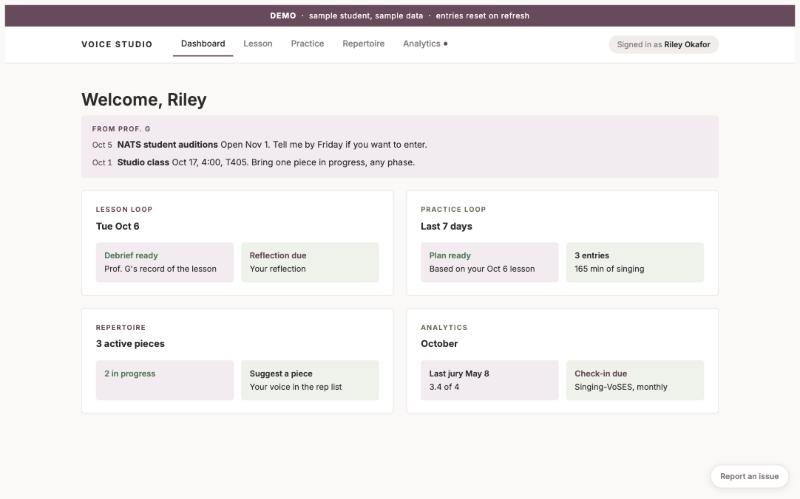
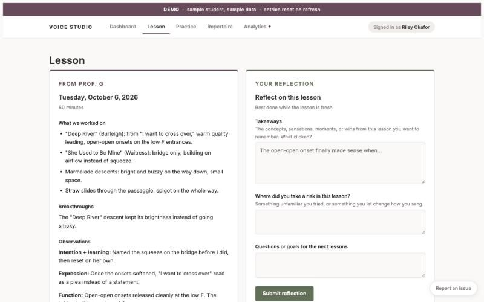
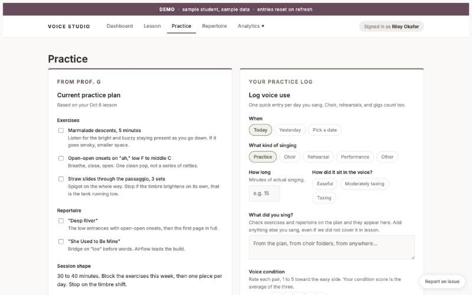
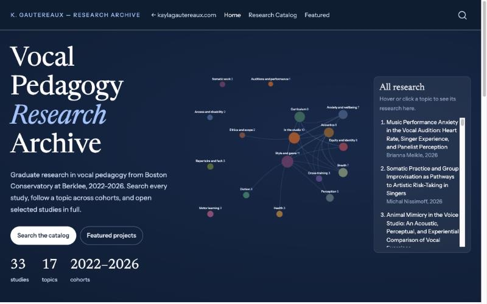

AI and Learning
Most of what happens in a voice lesson is never written down, and by the next week students have forgotten much of it. In 2024 I started building tools to help with that, using AI as a partner in teaching and learning, not as a replacement for either. The teacher still runs the lesson, and the student still does the work of learning. The AI helps keep a record of the lesson, prepare for the next one, and give students structure for the practice they do on their own.
Ian Howell, Theodora Nestorova, and I talked about AI and teaching on the VocalFri Podcast in April 2026.
The AI Supported Voice Studio Portal

Dashboard
Lesson debrief and reflection
Practice plan and logI built the portal for my own voice students, and I now use it with all of my private students. After each lesson it transcribes what happened and summarizes what we worked on and how the student responded. It writes an individual practice plan, and before the next lesson it prepares a brief for me from the student’s past lessons, reflections, and repertoire. Students see their progress, reflections, and plans on their own page. In 2026 the portal won the Pan American Vocology Association’s Best Microworkshop/ToolTalk award.
The portal is written in Python and uses the Claude API from Anthropic, with Supabase for the database and logins. The AI’s instructions are based on my teaching framework, including the co-investigation model, motor learning phases, an exercise taxonomy, and safety guidelines. The demo uses sample student data, so you can look around without an account.
The Vocal Pedagogy Research Archive

Graduate theses have a similar problem. Once they are filed, few people read them. With Claude, Anthropic’s AI model, I built and maintain a public archive of the graduate research from Boston Conservatory’s vocal pedagogy program. It holds 33 studies from 2022 to 2026 across 17 topics. Readers can search the catalog, follow a topic across cohorts, and explore the data in interactive figures. It is meant for students planning their own studies and for teachers looking for research they can bring into their studios. All data are confidentialized under Berklee’s institutional review board.
Consulting
I think teachers should be involved in building the AI tools they will use. I’m open to consulting and advisory work with companies building learning technology and with schools rethinking how teachers are trained.